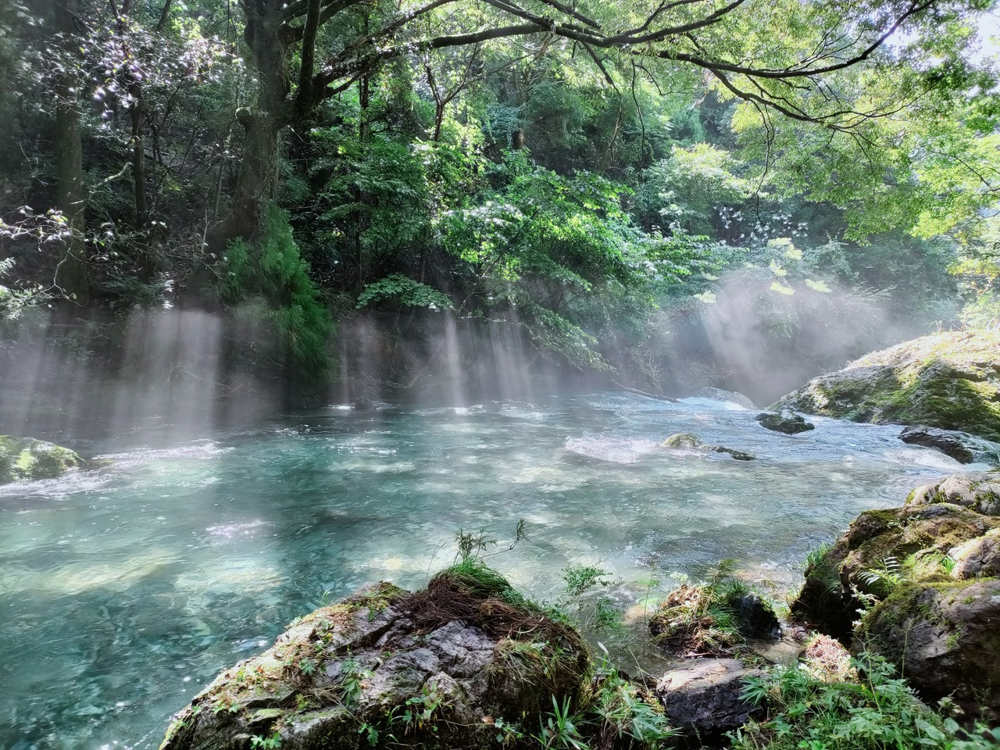

作ろうと思った「きっかけ」
円原川の光芒 © mi_irie クリエイティブ・コモンズ・ライセンス（表示4.0 国際）
水は山から湧き出て、川を作り、そこを下り、海や海岸へ流れます。
つまり、河川を可視化すると日本列島が浮かび上がってくるのでは？という思考のもと、実行して作ったのが、このアプリケーションです。
インストール方法
PWAに対応しているので、iPhone、Androidともに、WEBブラウザの「ホーム画面に追加」からインストールできます。

出典
・国土数値情報 河川データ、国土交通省のデータを加工・編集